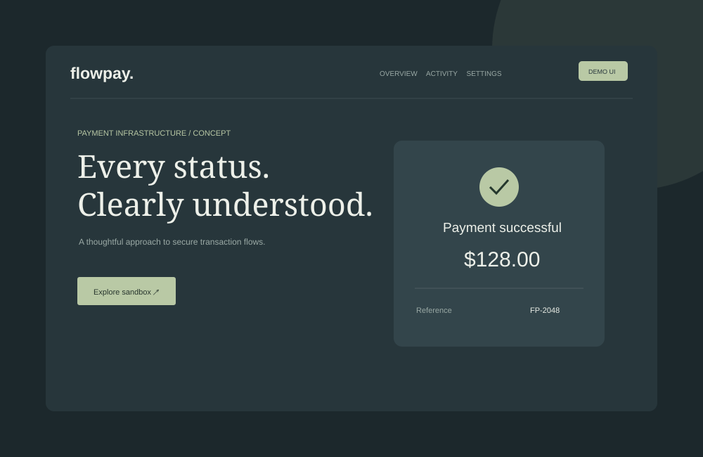

Secure API boundary
JWT-protected endpoints with input validation and clear error responses.
BACKEND / PAYMENT SIMULATION
A proposed sandbox for exploring secure payment requests and understandable transaction states.

INTERFACE EXPLORATION / FICTIONAL DATA

THE DESIGN CHALLENGE
Payment systems must account for retries, timeouts, and ambiguity. The proposed design separates request acceptance from settlement status.
JWT-protected endpoints with input validation and clear error responses.
A simulated progression through pending, successful, and failed states.
A proposed idempotency mechanism to handle retries without duplicate payments.
Validate user needs, agree on acceptance criteria, build a small working slice, and verify behavior with functional tests. Security, accessibility, error handling, and observability would be part of implementation review.
← All project concepts